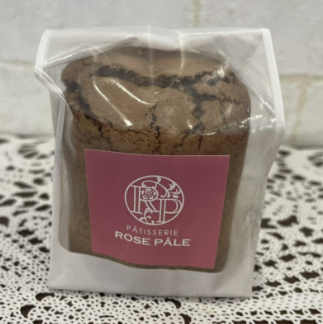
Baked Sweets
焼き菓子
のついた写真をタップすると説明文が表示されます
Chocolat
チョコレート
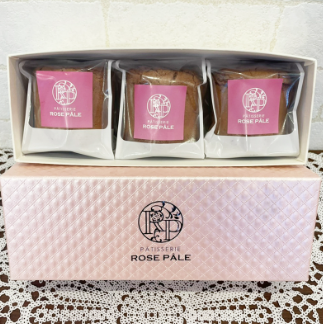
フォンダンショコラ 3個セット
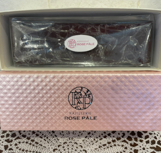
テリーヌショコラ
Pound Cake
パウンドケーキ
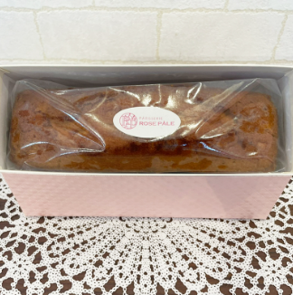
パウンドロング 6種類
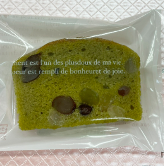
かのこ抹茶
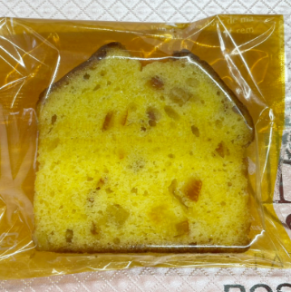
オレンジケーキ
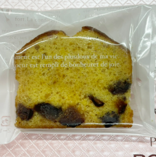
フィグケーキ
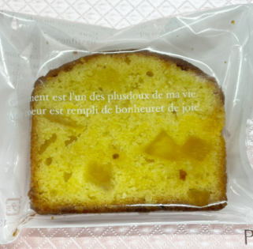
アナナス
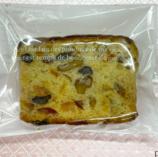
フルーツケーキ
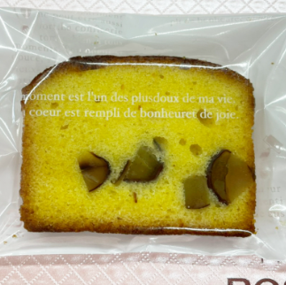
マロンケーキ
Petit Fours Secs
プティフールセック
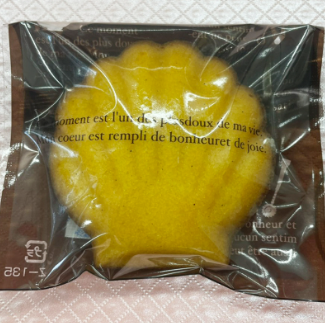
マドレーヌ

フィナンシェ
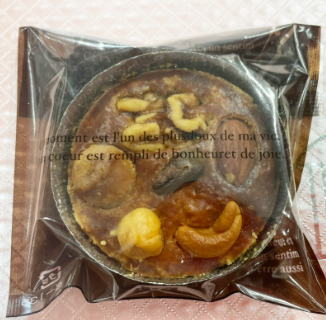
ブルトンヌノア
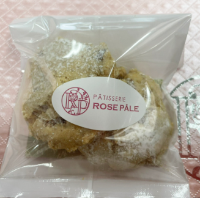
クロッカン
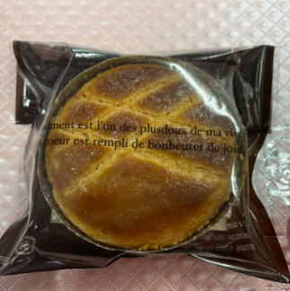
ガレットブルトンヌ
Gift & Nuts
ギフト・ナッツ
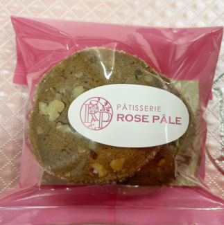
カフェペカン

カフェペカン ギフトケース
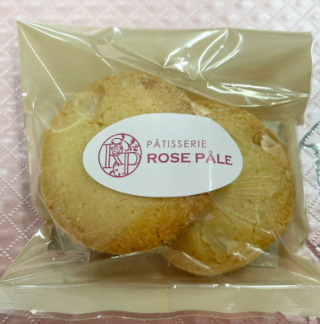
フロマージュマカダミア

フロマージュマカダミア ギフトケース
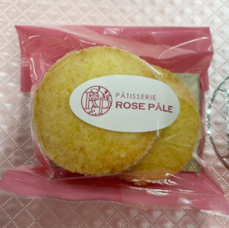
サブレココ

サブレココ ギフトケース
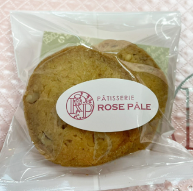
メープルノア

メープルノア ギフトケース
Macaron
マカロン
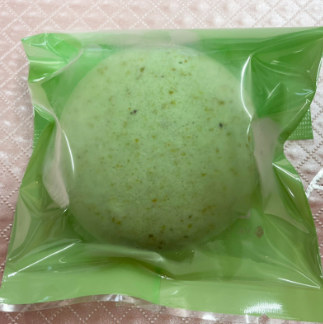
マカロン ピスタチ
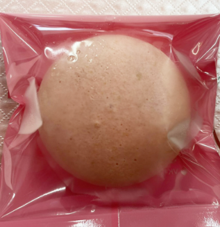
マカロン フレーズ
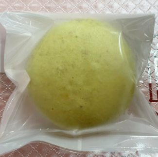
マカロン レモン
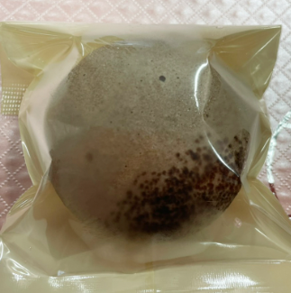
マカロン ショコラ
Assortment
詰め合わせ
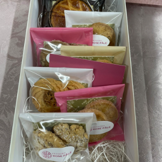
クッキー 7個
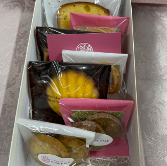
焼き菓子 7個
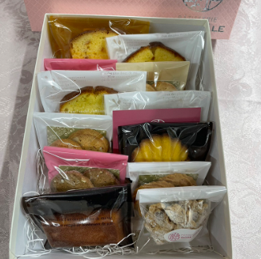
焼き菓子 12個
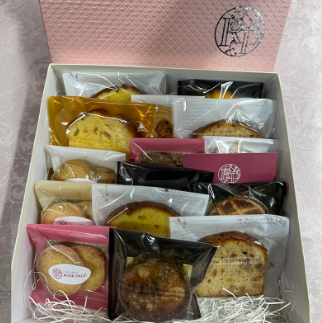